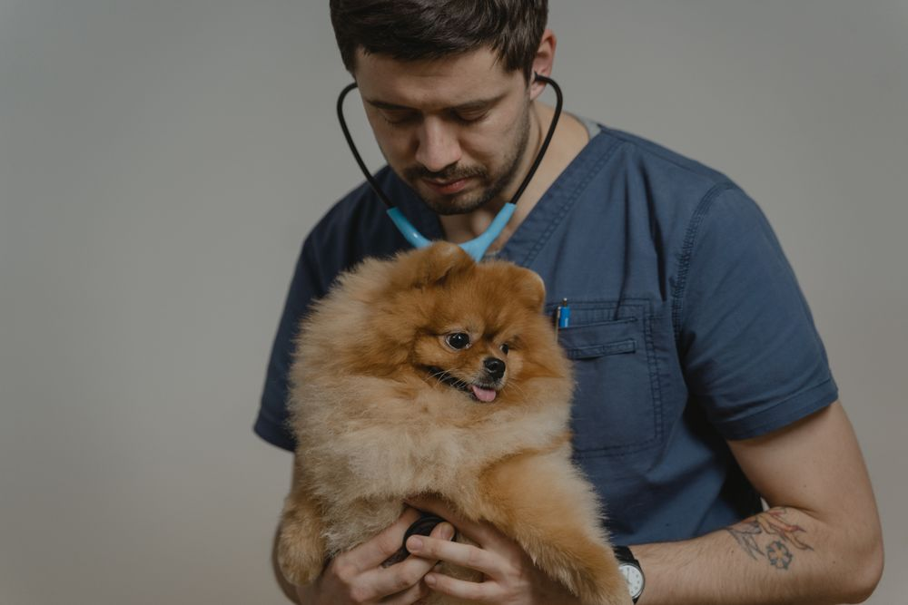

Banho e tosa
Mais conforto, higiene e carinho para o seu pet. Fale com a equipe e agende um horário.
Agendar banho e tosaBanho e tosa, saúde, alimentação e diversão. Tudo para o bem-estar do seu melhor amigo, aqui em Lages.
Carinho que faz parte da rotina.Conheça o @mundoanimal.lages
Um banho caprichado, a ração favorita, aquele brinquedo.
Cuidado que acompanha o dia a dia.
Mais conforto, higiene e carinho para o seu pet. Fale com a equipe e agende um horário.
Agendar banho e tosaAtenção à saúde do seu companheiro. Consulte os horários disponíveis para atendimento.
Consultar horáriosAlimentação, brinquedos e acessórios para acompanhar cada fase do seu melhor amigo.
Consultar produtosConsulte a equipe sobre a disponibilidade de medicamentos para o seu pet.
Falar com a equipePrecisa de ração, petiscos, medicamentos ou acessórios? Fale com o Mundo Animal e consulte as opções de entrega para sua região.
Dicas, produtos e um pouco do nosso dia a dia. Acompanhe o Mundo Animal no Instagram.
@mundoanimal.lagesEsperamos você e seu pet em Lages.
Av. Marechal Floriano, 278Entre em contato com o Mundo Animal e fale com a equipe.